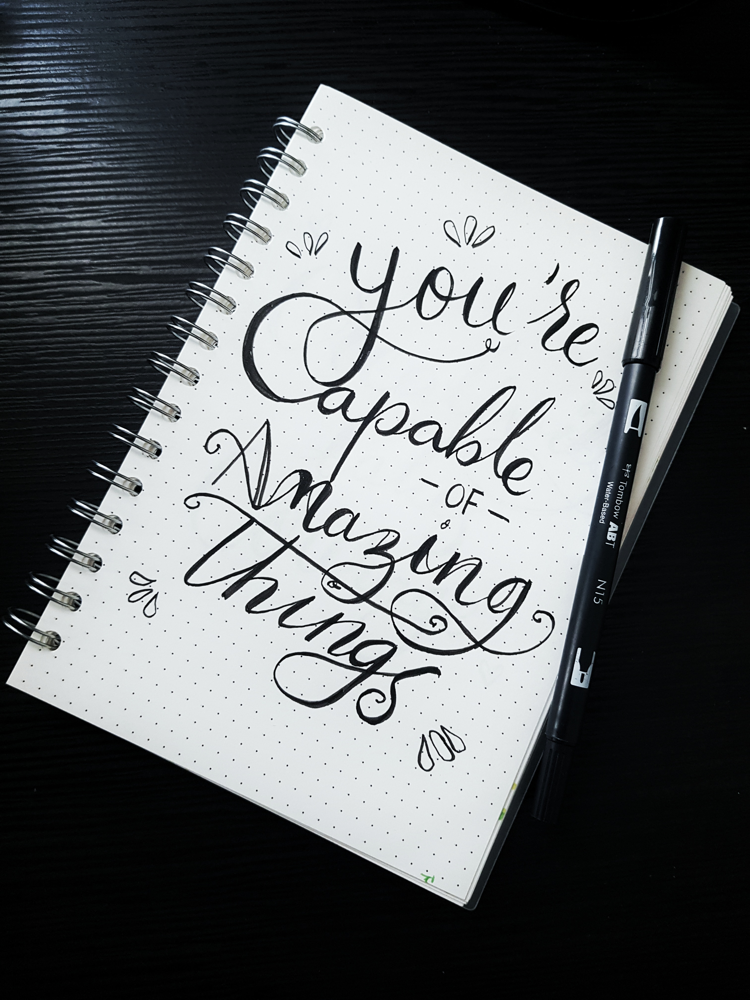

Overcoming Anxiety and Stress (4 Weeks)
Kes. 12,400
- Proven Techniques: Effective, research-backed strategies to manage and reduce anxiety and stress in your everyday life.
- Personalized Approach: Receive tailored guidance and support to address your unique stress triggers and develop personalized coping mechanisms.
- Practical Tools: Gain a toolbox of practical techniques and exercises that can be easily integrated into your daily routine for immediate relief.
- Lasting Transformation: Discover long-term strategies to build resilience and cultivate a more balanced and peaceful mindset.
Building Self-Confidence (6 Weeks)
Kes. 21,000
- Inner Transformation: Uncover the root causes of self-doubt and develop a solid foundation of self-confidence through empowering mindset shifts.
- Positive Self-Image: Learn techniques to reframe negative self-talk, embrace self-acceptance, and foster a positive self-image.
- Stepping Out of Comfort Zones: Receive guidance on stepping outside your comfort zone to experience personal growth and expand your horizons.
- Assertiveness Skills: Develop effective communication and assertiveness skills to express yourself confidently and assert your needs.
- Empowerment in Action: Gain practical tools to overcome obstacles, set and achieve meaningful goals, and unleash your full potential.

Navigating Relationships (6 Weeks)
Kes. 21,000
- Communication Mastery: Learn powerful communication techniques to foster understanding, resolve conflicts, and build deeper connections.
- Emotional Intelligence: Develop emotional awareness and empathy to navigate relationships with greater sensitivity and understanding.
- Boundary Setting: Discover effective ways to set healthy boundaries and maintain balance in various relationships.
- Relationship Enhancement: Explore strategies for improving intimacy, trust, and mutual support within your personal and professional relationships.
- Conflict Resolution: Acquire skills and strategies to navigate conflicts constructively, fostering healthier and more harmonious relationships.
Finding Work-Life Balance (3 Weeks)
kes. 9,300
- Holistic Approach: Discover practical methods to achieve harmony by integrating personal and professional life and establishing a healthy work-life balance.
- Time Management Mastery: Learn effective time management techniques to maximize productivity, prioritize tasks, and minimize overwhelm.
- Self-Care Strategies: Develop self-care routines and practices to nourish your physical, mental, and emotional well-being amidst a busy lifestyle.
- Setting Priorities: Gain clarity on your values and priorities, enabling you to make conscious choices that align with your goals and aspirations.
- Sustainable Success: Learn strategies to avoid burnout and maintain long-term success by creating sustainable habits and maintaining boundaries.

Cultivating Resilience (6 Weeks)
kes. 27,000
- Resilience Mindset: Develop a resilient mindset to bounce back from setbacks, adapt to change, and thrive in challenging situations.
- Managing change: Practical tools to enhance your fortitude, have a resilient mindset, and develop the ability to adapt, recover, and thrive in the face of adversity.
- Growth Through Adversity: Discover how to transform obstacles into opportunities for personal growth and self-discovery.
- Self-Reflection Practices: Cultivate self-awareness and emotional intelligence through reflective exercises that enhance resilience and personal development.
- Empowered Mindset: Develop empowering beliefs and thought patterns that support resilience, optimism, and a proactive approach to life's challenges.
Career Leap and Leadership Advancement (8 Weeks)
kes. 36,000
- Personalized Career Strategy: Receive personalized coaching and guidance to identify your unique strengths, align them with your desired career path, and develop a customized career growth and advancement strategy.
- Leadership Development: Acquire the essential skills and mindset required for successful leadership, including effective communication, decision-making, team management, and strategic thinking.
- Networking and Mentorship: Develop a supportive network of industry professionals and potential mentors who can provide guidance, support, and valuable connections to accelerate your career progression.
- Meetings and Presentations: Develop skills that help you sell your skills, competencies, and abilities during meetings and presentations and pivot into desired roles.


Accountability & Growth (12 Weeks)
kes. 90,000
- Deep Dive: A longer and more intense focus on improvement, change, or growth for transformation.
- Personal Assessment and Goal Setting: A comprehensive assessment of relevant life experiences, skills, and strengths for the development of correct 3 - month goals.
- Tailored Skill Development Workshops: Sessions focusing on essential skills in the development area.
- Three One-on-One Coaching Sessions: Progress discussion, exploring obstacles, receiving feedback, and improving growth strategies.
- Practical Exercises and Resources: Self-led exercises, activities, and resources to build resilience and self-awareness.
- Accountability and Progress Tracking: Personalized accountability and milestone celebration system anchored on clear action plans to maintain focus, boost confidence, and provide a sense of accomplishment.